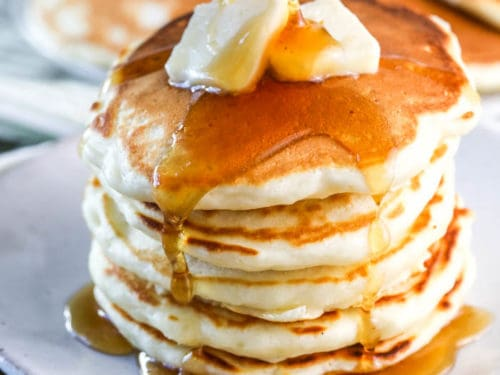

Pancake Recipe

Description
A pancake is a breakfast dish, a flat cake that's made by pouring batter into a hot pan and frying it on both sides. Many people like to eat their pancakes with a drizzle of maple syrup. While pancakes can be savory, they're more often a sweet breakfast food in the US.
Ingredients
- 1 cup all-purpose flour, (spooned and leveled)
- 2 tablespoons sugar
- 2 teaspoons baking powder
- ½ teaspoon salt
- 1 cup milk
- 2 tablespoons unsalted butter, melted, or vegetable oil
- 1 large egg
- 1 tablespoon vegetable oil
- Assorted toppings, such as butter, maple syrup, confectioners' sugar, honey, jams, preserves, sweetened whipped cream, or chocolate syrup
Steps
-
Gather ingredients and preheat oven:
Preheat oven to 200 degrees. Have a baking sheet or heatproof platter ready to keep cooked pancakes warm in the oven.
-
Mix dry ingredients:
In a small bowl, whisk together flour, sugar, baking powder, and salt; set aside.
-
Mix wet ingredients:
In a medium bowl, whisk together milk, butter (or oil), and egg.
-
Combine wet and dry ingredients:
Add dry ingredients to milk mixture; whisk until just moistened. (Do not overmix; a few small lumps are fine.)
-
Heat and oil skillet or griddle:
Heat a large skillet (nonstick or cast-iron) or griddle over medium. Fold a sheet of paper towel in half, and moisten with oil; carefully rub skillet with oiled paper towel.
-
Spoon batter onto skillet or griddle:
For each pancake, spoon 2 to 3 tablespoons of batter onto skillet, using the back of the spoon to spread batter into a round (you should be able to fit 2 to 3 in a large skillet).
-
Cook first side:
Cook until surface of pancakes have some bubbles and a few have burst, 1 to 2 minutes.
-
Flip pancakes:
Flip carefully with a thin spatula, and cook until browned on the underside, 1 to 2 minutes more.
-
Serve immediately, or keep warm in oven:
Transfer to a baking sheet or platter; cover loosely with aluminum foil, and keep warm in oven. Continue with more oil and remaining batter. (You'll have 12 to 15 pancakes.) Serve warm, with desired toppings.